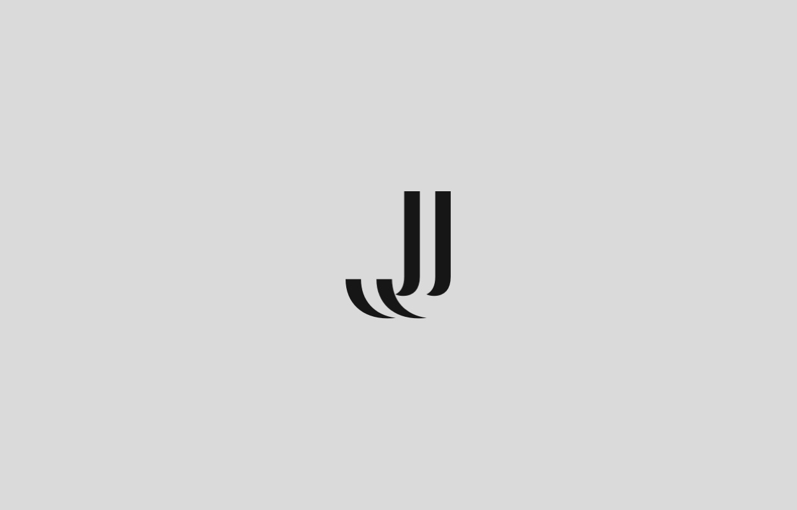

-


Jota Bustos
Full Stack Developer
Madrid
Who I Am
and What I Do.
I'm Jose Julian, but everybody calls me Jota. I'm a highly motivated telecommunications engineer whose passion is the web and mobile app development.
Why Full Stack? A Full Stack Developer is someone who is competent to deal with the technologies behind the entire application stack, that is, the different layers of technologies that make up a modern application.
"Jack of all trades, master of none" While I may not be an expert across all stacks, I can become proficient enough to produce powerful and professional apps. I can work across multiple streams, from back-end to front-end and even database.
My Main
Skills.
Work and
Experience.
-
2 Years
2017-2018
IT Consultant
Worked as IT consultant at The Key Talent, a technological company specializing in digital transformation, which focuses on human resources, tools to make processes of attraction, recruitment, evaluation or training more active, digital and efficient. I was part of the IT team and I was managing the tech solution of national and international recruitment and evaluation projects. Also as front-end web developer, I developed the landing pages of those projects using HTML/CSS + Javascript and some software using Angular and Python. These webs were always tracked with Google Analytics.
-
1 Year
2016
Student Researcher
I was part of the IT Security Evaluation laboratory that belongs to the Technology Innovation Center (TIC) of the Universidad Carlos III de Madrid. Its research work is focused on the security evaluation of networked information systems, and on the communications implications in performance interoperability and conformance. In this company, I worked in the creation of a safe installation guide for the software VMware vSphere, a platform to build cloud infrastructure. Furthermore, I had experience with OpenVAS, a framework of several services and tools offering a comprehensive and powerful vulnerability scanning and vulnerability management solution.
Education
-
1 Year
2018-2019
KeepCoding
Mobile Development Bootcamp
An immersive program created by developers & entrepreneurs to become Full Circle Engineer (iOS, Android, Web).
-
5 Years
2012-2017
Universidad Carlos III de Madrid
Bachelor's Degree in Telecommunication Technologies Engineering
The main goal of the bachelor is to form professionals at the forefront of technological knowledge and professional competences in telecommunication engineering, not being limited to concrete technologies or specializations.